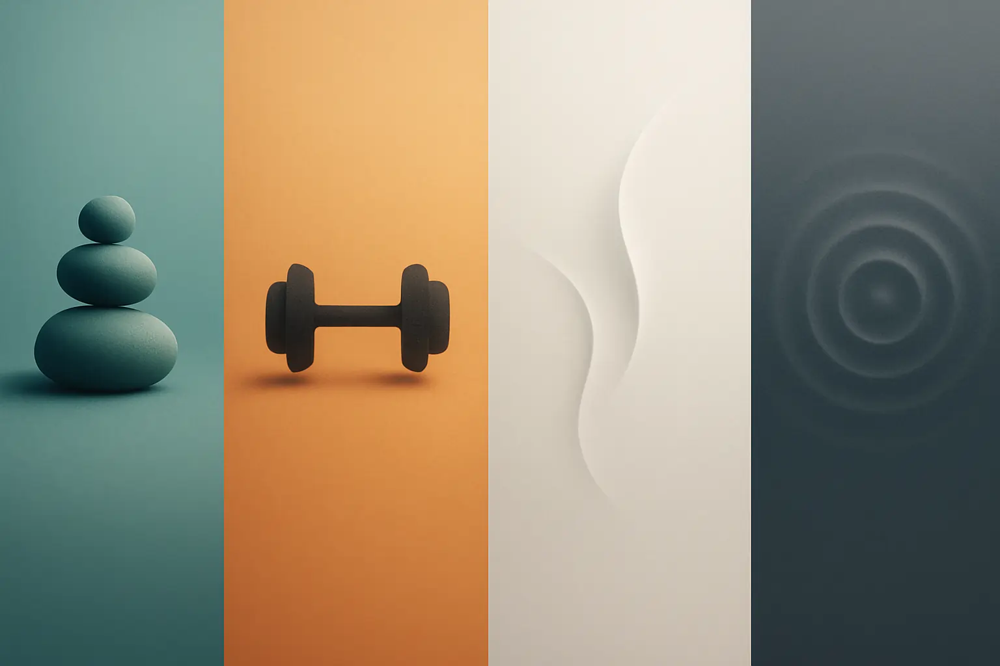

The 4 Types of Exercise Every Person with Parkinson's Should Do


06
Nov
Apricot Care
When someone gets diagnosed with Parkinson's disease, the first thing most people ask is, "What can I do?" The answer often surprises them: movement itself becomes the strongest medicine. Exercise is not just helpful for people with Parkinson's disease, it is essential. At Apricot Care Assisted Living and Rehabilitation, a leading neuro rehabilitation centre in Pune, we have seen firsthand how the right exercise program transforms lives.
Parkinson's disease affects the way your brain controls movement. Symptoms like tremors, stiffness, and balance problems make daily tasks harder. But here's what matters: exercise can slow down these symptoms, improve mobility, and give people back their independence. If you or your loved one is living with Parkinson's, understanding the four types of exercise recommended by experts can change everything.
In this guide, we will walk you through each type of exercise, explain why it works, and show you how to get started. Whether you are at an early stage or dealing with advanced symptoms, there is an exercise program that fits your needs.
Why Movement Matters for Parkinson's Disease
Before we dive into the four types of exercise, let's talk about why movement matters so much. Parkinson's disease involves a loss of dopamine, the chemical in your brain that controls smooth movement. Medication helps, but it doesn't address the root problem completely.
Exercise works differently. When you move your body, several things happen at once. Your brain releases dopamine naturally. Your muscles stay strong and flexible. Your balance improves. Your mood gets better. Your sleep becomes deeper. These benefits go beyond what pills alone can offer.
At Apricot Care, our Parkinson's treatment Pune specialists have found that people who exercise regularly have:
- Better control over their movements
- Fewer falls and injuries
- Improved thinking and memory
- Higher quality of life
- Slower disease progression
The key insight is this: the brain learns from movement. Every time you
exercise, you are training your brain to work better, even with
Parkinson's.
Type 1: Aerobic Exercise: Building Heart and Brain Health
Aerobic exercise means any activity that gets your heart pumping and keeps it
steady for a period of time. This could be walking, swimming, cycling, or
dancing. The goal is to move in a way that challenges your cardiovascular
system without exhausting you.
Why Aerobic Exercise Works for Parkinson's
When you do aerobic exercise, your body releases endorphins and dopamine. Your heart gets stronger. Your blood flows better to your brain. Studies show that aerobic exercise can reduce Parkinson's symptoms and even slow down disease progression.
For people with Parkinson's disease care that Pune residents receive, aerobic
activity is often the starting point. It is gentler than intense strength
training, but it delivers powerful benefits.
How to Get Started with Aerobic Exercise
The recommendation from movement disorder clinic experts is simple: aim for 150 minutes of moderate aerobic activity per week. This breaks down to about 30 minutes, five days a week. You do not need to do it all at once. Three 10-minute sessions work just as well.
Good aerobic options for Parkinson's include:
- Brisk walking (outdoors or on a treadmill)
- Swimming or water aerobics
- Stationary or outdoor cycling
- Dancing (a favorite at our Parkinson's rehab sessions)
- Elliptical machine exercise
- Tai Chi (which combines aerobic
benefits with balance work)
Safety Tips for Aerobic Exercise
Start slowly. If you have been inactive, begin with 10-minute sessions. Gradually build up to 30 minutes. Always warm up for five minutes before starting and cool down afterward. Wear supportive shoes. If balance is an issue, hold onto a railing or exercise near a wall.
Type 2: Strength Training: Maintaining Independence and Function
Strength training means using resistance to build and maintain muscle. This could be light weights, resistance bands, or even your own body weight. The goal is to keep muscles strong enough for daily living.
The Connection Between Strength and Daily Life
Parkinson's causes muscle rigidity. Over time, muscles shrink if not used. Strength training fights both problems. Strong muscles make it easier to stand up from a chair, climb stairs, carry groceries, and balance when walking.
At our specialized care for Parkinson's disease patients in Pune, we emphasize that strength training is not about looking muscular. It is about maintaining the ability to do what you want to do.
Key Strength Training Exercises
The best strength exercises for Parkinson's focus on the core, legs, and upper body. Here are the most important ones:
Sit-to-Stand Exercise: Stand up and sit down from a chair 10 times, moving slowly and controlled. This strengthens your legs and improves your ability to get around.
Wall Push-ups: Stand facing a wall, place hands flat on it, and do push-ups. This builds chest and arm strength safely.
Resistance Band Work: Loop a resistance band around your feet or hands and perform exercises like bicep curls or leg extensions.
Squats: Slowly bend your knees and lower your body, then stand back up. Squats build the strongest muscles in your legs.
Planks: Hold your body straight for as long as comfortable. This builds core strength, which helps with balance and posture.
Strength Training Frequency and Approach
Most experts, including those at movement disorder clinic locations, recommend strength training two to three times per week. Each session should last 20 to 30 minutes. Do 10 to 15 repetitions of each exercise. Rest between sessions to allow muscles to recover.
The key is consistency. Even light strength work done regularly delivers better results than occasional intense workouts.
Type 3: Balance and Agility Exercise: Reducing Fall Risk
Balance problems are one of the toughest challenges for people with Parkinson's. Falls lead to injuries, hospital stays, and loss of confidence. Balance and agility exercises directly target this problem.
Why Balance Deteriorates in Parkinson's
Parkinson's affects the part of your brain that coordinates movement and balance. Your reflexes slow down. Your sense of where your body is in space becomes less accurate. These changes make falls more likely.
Balance training wakes up these systems. Your brain learns to compensate and adapt. Results often appear quickly, within weeks, many people notice better stability.
Essential Balance Exercises
Heel-Toe Standing: Stand with one foot in front of the other, heel to toe, for 30 seconds. Switch. This trains your balance system.
Single-Leg Stands: Hold onto a sturdy object and stand on one leg for 10 to 20 seconds. Do both sides equally.
Tandem Walking: Walk heel-to-toe in a straight line, as if on a tightrope.
Box Stepping: Step forward, backward, and sideways over a low box or step.
Yoga and Tai Chi: These ancient practices rebuild balance and body awareness. Classes designed for Parkinson's patients are available at many Parkinson's rehab centers in Pune.
Boxing: Non-contact boxing combines balance, coordination, and cardiovascular benefit. The big, deliberate movements are especially good for Parkinson's.
Making Balance Training Safe
Always do balance exercises near a wall, sturdy furniture, or another person. Never reach for things on high shelves or low areas while balancing. Wear non-slip shoes. Clear the floor of hazards. If you feel dizzy or unstable, sit down immediately.
Type 4: Flexibility and Stretching: Easing Rigidity and Stiffness
Rigidity is a hallmark of Parkinson's. Muscles tighten up and become hard to move. Flexibility exercises and stretching routines directly combat this problem.
How Rigidity Impacts Daily Life
When muscles become rigid, simple tasks get harder. Turning in bed, putting on clothes, brushing teeth, everything takes longer and feels more difficult. Stretching does not cure rigidity, but it makes a real difference in how freely you can move.
Effective Stretching Routines
Stretching should be done gently. Never bounce or force a stretch. Move slowly into a position and hold it for 15 to 30 seconds. Breathe deeply. Do both sides of your body equally.
Key areas to stretch for Parkinson's include:
Neck and Shoulders: Gently turn your head left and right. Roll your shoulders backward and forward.
Chest and Arms: Place one arm across your body and gently pull it toward your chest. Hold for 20 seconds each side.
Hips and Legs: Sit on the floor and reach toward your toes. Hold a hamstring stretch for 30 seconds.
Calf Muscles: Stand facing a wall, step one foot back, and lean forward until you feel a stretch in the back of your leg.
Back: Sit and gently twist your upper body left and right, or lie on your back and hug your knees to your chest.
Stretch every day if possible. Even 10 minutes daily keeps muscles loose and movement easier.
Putting It All Together: Your Complete Parkinson's Exercise Program
The best approach combines all four types of exercise. Here is a sample weekly schedule:
Monday: 30 minutes aerobic activity (walking or cycling) plus 10 minutes flexibility work
Tuesday: 25 minutes strength training plus 15 minutes balance exercises
Wednesday: 30 minutes aerobic activity (dancing or swimming) plus 10 minutes flexibility work
Thursday: Rest or gentle stretching
Friday: 25 minutes strength training plus 15 minutes balance exercises
Saturday: 30 minutes mixed activity (aerobic plus balance plus flexibility)
Sunday: Rest or light stretching
This approach gives your body variety, prevents boredom, and targets every aspect of Parkinson's challenge.
Getting Professional Support: Why Expert Guidance Matters
While these exercises can be done at home, working with professionals makes a huge difference. Physical therapists at a neuro rehabilitation centre in Pune can customize programs for your specific needs and stage of disease.
At Apricot Care, our team specializes in Parkinson's physiotherapy. We design programs that match your current abilities and goals. We make sure your form is correct to prevent injury. We motivate you on the hard days and celebrate your wins.
If you live in Pune or nearby areas, Parkinson's treatment Pune specialists can help you get started. If not, ask your doctor for referrals to local therapists experienced with movement disorders.
Overcoming Common Obstacles
"I am Afraid of Falling"
This is the most common concern. Start with exercises near walls or furniture. Use a walker if needed. Many people find that balance training actually reduces fall risk over time. Start small and build confidence gradually.
"I Don't Have Motivation"
Join a group class. Exercising with others boosts motivation dramatically. Many Parkinson's rehab programs offer group sessions. Apps and online communities also help. Set small goals and celebrate reaching them.
"My Symptoms are Too Advanced"
Even advanced Parkinson's responds to exercise. Modifications can be made for any limitation. Talk to your doctor and physical therapist about what is safe and possible for you.
"I Don't Know Where to Start"
Start with what feels easiest. If you enjoyed walking before Parkinson's, start with aerobic walking. If you like flexibility, start with stretching. Any movement is better than no movement. From there, gradually add the other three types.
The Science Behind Exercise and Parkinson's
Recent research confirms what clinicians have observed: exercise changes the brain in people with Parkinson's. Studies show that regular aerobic exercise can increase dopamine production. Strength training improves motor control. Balance exercises activate compensatory pathways in the brain.
One landmark study found that people with Parkinson's who exercised regularly showed slower disease progression compared to those who did not. Another found that exercise improved thinking and memory even when it did not improve motor symptoms.
This is not theory. This is measurable, real change.
Moving Forward: Your Path to Better Health
Living with Parkinson's is challenging. But it is not a life sentence of decline. Movement gives you power. Exercise is the tool that maintains your strength, independence, and quality of life.
The four types of exercise, aerobic activity, strength training, balance work, and flexibility training, work together to address Parkinson's from every angle. Start where you are. Use what you have. Do what you can.
If you live in Pune, specialized care for Parkinson's disease patients is available. Organizations focused on movement disorder clinic services and Parkinson's rehab can provide the professional support that accelerates your progress.
The journey with Parkinson's is long. But every day you exercise, you are doing something that matters. You are building strength, maintaining mobility, and preserving independence. That is powerful. That is worth doing.
Start today. Your brain and body will thank you.